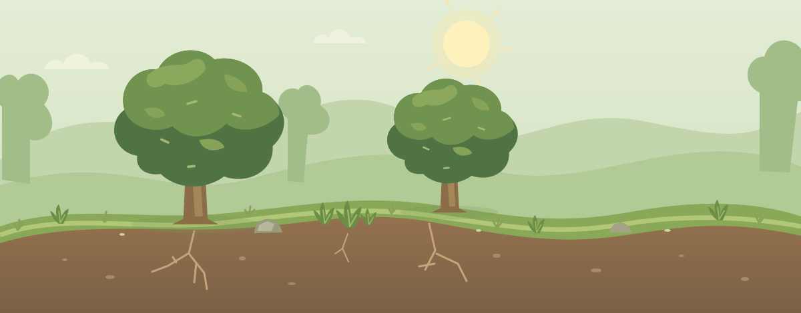

작은 숲 연구소
4학년 과학 · 생물과 환경
생태계 안정도
관찰 준비
생태계 포인트
0 P
관찰과 배움으로 얻어요생물 다양성
2종
숲에 있는 생물의 종류현재 환경 상태 · 살펴보기 ›
맑은 숲
눌러서 환경을 비교해 보세요
MY LITTLE FOREST
나의 숲 01
☀ 햇빛 충분◈ 물 알맞음≋ 공기 좋음토양 좋음
흙 뿌리를 지탱하고, 물과 양분을 품어요
카드를 골라 숲에 생물을 놓아 보세요.
나의 생물 카드 6
카드를 고르고, 숲을 터치해요.